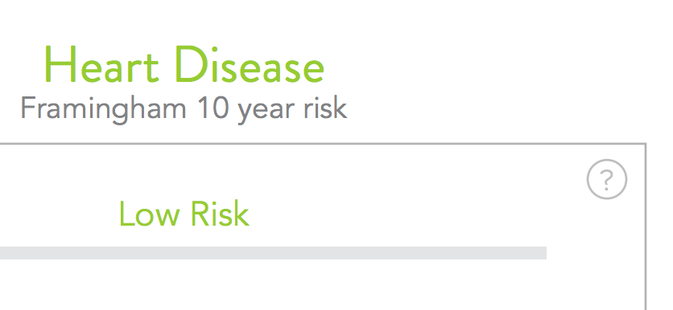

Today is one of those days that started out with a Google search for yet another accessibility question/concern. I’m working on a new project for my client Provata and part of that project is to build a sweet and seemingly simple help tooltip which explains to the reader/user what the Framingham calculator is.
The tooltip is triggered by a small help icon like the one shown in the top right corner of this screenshot:

As with every project, starting out by thinking about what HTML element to use to mark up a component was the first thing I did. But it turned out there is no HTML element to mark up a tooltip like this. And when we have no semantic elements to mark up our components, we are faced with the challenge to make sure that assistive technologies (ATs)—which are usually capable of understanding and conveying meaning via semantics—are able to understand what our elements really are and what they do.
ARIA attributes to the rescue?
Making elements more readable by ATs when HTML isn’t enough is possible using ARIA attributes. For example, you can get by creating a progress bar without actually using the not-too-well-supported HTML <progess> element. Making that bar look and behave like a bar is straightforward using some CSS, but if you’re using divs and spans to build it, you need to give ATs something more to make something of those non-semantic elements. This is where ARIA attributes like role="progressbar" and its companions, the helpful aria-valuenow, aria-valuemin and aria-valuemax (among others), come in handy. Sprinkling in some simple JavaScript, you upate the value inside aria-valuenow as the user progresses through whatever steps you provided them with and you’re generally good to go. You can read more about this on MDN if you’re curious or unfamilir with this.
Great.
We have an ARIA attribute value to help us indicate that a certain element is a tooltip: tooltip. Using role="tooltip" ATs know that this element is indeed a tooltip.
But tooltips are usually triggered by an action performed on another element.
Let’s first get back to the basics. According to Wikipedia:
The tooltip or infotip or a hint is a common graphical user interface element. It is used in conjunction with a cursor, usually a pointer. The user hovers the pointer over an item, without clicking it, and a tooltip may appear—a small “hover box” with information about the item being hovered over. Tooltips do not usually appear on mobile operating systems, because there is no cursor (though tooltips may be displayed when using a mouse).
I have a problem with the “Tooltips do not usually appear on mobile operating systems, because there is no cursor” part because mobile users have just as much right to get information on a page as non-mobile users. Whether you’re using a mouse or your finger, you should be able to understand what the Framingham score is, so this tooltip should be accessible in all contexts. And this is exactly where the fun starts.
Triggering the opening/closing of the tooltip
I knew I couldn’t rely on hover alone (even though my client only requested hover) because, unless you have a touch screen with a fancy digital pen which allows for hover to be triggered, you won’t be able to see the hint inside the tooltip, and that is unacceptable.
I set out to make the tooltip show when the help icon is both hovered and clicked.
It is worth noting at this point that sometimes tooltips work on both touch and pointer screens without having to do any extra work, such as those that are shown as help labels on input fields, like this example by Heydon Pickering. In scenarios like this one, role="tooltip" in combination with aria-describedby are enough to indicate to ATs that this piece of text is indeed a tooltip which describes the content or functionality of the input field. Marking the tooltip up in this case is very easy because it’s already clear enough what it is. All that remains is for you to show/hide the text when the input field is focused, and this can be done using a couple of lines of CSS alone. The experience is great on mouse and touch screens, and everyone gets to experience it the same way.
However, things aren’t so straightforward when you have an example like the one in my project. And apparently I’m not the only one who’s been here and has been just as confused as to how to approach this.
Here are a few of the ideas that crossed my mind as I was thinking about the implementation of this:
- Use a
<button>to trigger the opening and closing of the tooltip. Tooltip would initially be hidden so that ATs won’t read it out loud as the user moves down the page. The tooltip interrupts the flow of the content in our project’s case and so should only be shown on demand. - “on demand” means when the user hovers/clicks/taps/focuses the trigger.
- The tooltip would initially be hidden using
display: noneand only shown on demand. - Since semantics and “how machines would read this” is how I start all of my HTML code, I thought:
- if I use
<button>I’ll have to usearia-controlsto indicate what that button controls and that it will show/hide some element when it is clicked. All good.
- if I use
- Speaking of semantics, I could also use a link (
<a>) that links to a specific section on the page, which in my case is the element containing the hint. - When using a link, the user will jump to the section on the page to which they’re being taken. I hate page jumps. I avoid them like the plague unless the decision to jump is intentional. (For example, a “Back to top” link on a very long page.)
- In order to avoid the jump when using
<a>, and in order to make the<button>open and close the tooltip, I need JavaScript. - For some holistic reason, I wanna avoid JavaScript and use it only when necessary. What if the user is a senior using some very old machine that has JS disabled?
Usually, when I’m torn between two solutions and when the JS-no-JS thoughts start floating in my mind, I look for second opinions. My first source of a second opinion is Google. I thought: “someone else must have built one of these before, and so must have somebody else too, so let’s see how they approached it and solved these issues”.
At this point I was still on the “I want to do this without JS if possible” boat, but believe it or not I love JS and was completely open to using it if the JS-based solution is better than all of the others.
Googling got me to land on a question that was exactly the same as mine. I found a lot of similar questions but all of them were more like the tooltip-on-input example. I found a very old thread started by Zoe Gillenwater who had the same question back in 2011 that I had today. I am aware that some technical details in there would/could be invalid today but the general principles are still valid. I highly recommend you read through that thread before continuing to read this article because everything else in here is based on some of the insights I got from that thread. Main points mentioned in the thread included:
- Avoid using
<button>and stick to<a>because links can be used to practically anything whereas buttons should be left for using in forms. I have to say I disagree here. If you know a very good reason to avoid using<button>, please let me know. - Using
<a>you have to consider/remember:- If you use
<a>and have the hint be included inside of it: - The code looks like this:
<a href="#" aria-describedby="#tip"> <!-- your icon here, img or svg --> <span id="tip"> Your hint text here </span> </a> - The text will be readable with the flow (which is not favorable in my case) because the content of the hint interrupts the flow of the information and data displayed in the main content.
- Using CSS only, you can hide and show the text with
display: noneanddisplay: blockrespectively when the link is hovered. This is good for sighted users using a mouse. However,… - If you hide the text using
display: noneinside the<a>and show it on focus, ATs won’t be able to read the shown text because the contents of the link are announced on initialfocusonly and won’t be re-announced when the text is displayed inside the link withdisplay: block. - Testing this out I noticed that since the link doesn’t really link to anywhere, the user will jump to the top of the page when they tap the link on a touch screen. This is particularly horrible in our case because we have a long page and jumping up will only confuse the users. This can be solved using JavaScript to
preventDefaulton click. - (My opinion: I really dislike the fact that the link doesn’t really link anywhere. It’s a self-containing link, if that makes any sense, which negates the role of the link to begin with, in my opinion. So even though I tested it out of curiosity, I knew I didn’t want to use this.)
- If you use
<a>and have it link to a separate piece of text (not a descendant of the link itself): - The code would be along the lines of:
<a href="#tip"><!-- icon here --></a><div id="tip"> <!-- tooltip text here --> </div> - The link still causes a page jump unless using JavaScript.
- On touch screens, tapping the link focuses it which in turn opens the tooltip, but the link image remains the same and there is no way to close the tooltip unless the user clicks anywhere outside it to remove its focus, which is not intuitive because there’s a lot of cognitive effort and guesswork and “how do I close this” guesswork and frustration involved, especially since the tooltip covers the content when open.
- If you use
Every single no-JS solution came with a very bad downside that negatively affected the user experience. JavaScript is the way to make this work properly for every user in every context. It solves every one of those problems mentioned, except for the “this link doesn’t link anywhere” problem which can only be solved by, well, not using a link that links nowhere. :D (Some may disagree that a link not linking anywhere is not particularly wrong or invalid, but it’s not something I’d personally do.) I ended up choosing a solution that works, using JavaScript, and has a not-too-bad fallback as well. This pretty much covers the main thoughts and considerations I had throughout this. I will post the markup and functionality I ended up using in this project’s case study.
Conclusion(s)?
JavaScript is imperative to make fully-accessible interactive components. Sure, you can get away without using it in some cases, but a lot of accessibility requires JavaScript. Some ARIA roles and attributes are absolutely necessary to make components accessible, and many of those will simply not behave as they need to unless you make them work with JavaScript. Since my client is a health company, it is more likely that their users have one form of disability or the other than it is that they have JS disabled, so it’s safe to worry about not implementing JavaScript than about it not running.
If you’re interested in learning more about which attributes require what, I highly recommend checking out the ARIA Role Matrices from WhatSock. It provides and easy-to-scan and read overview.
Paul J Adam has also created a demo to show the different ways to show tooltips on hover. His examples still use JavaScript to make the components more accessible by toggling ARIA attributes as the tooltips open/close. This one is also definitely worth checking out.
Did I miss something? Let me know on in a tweet.